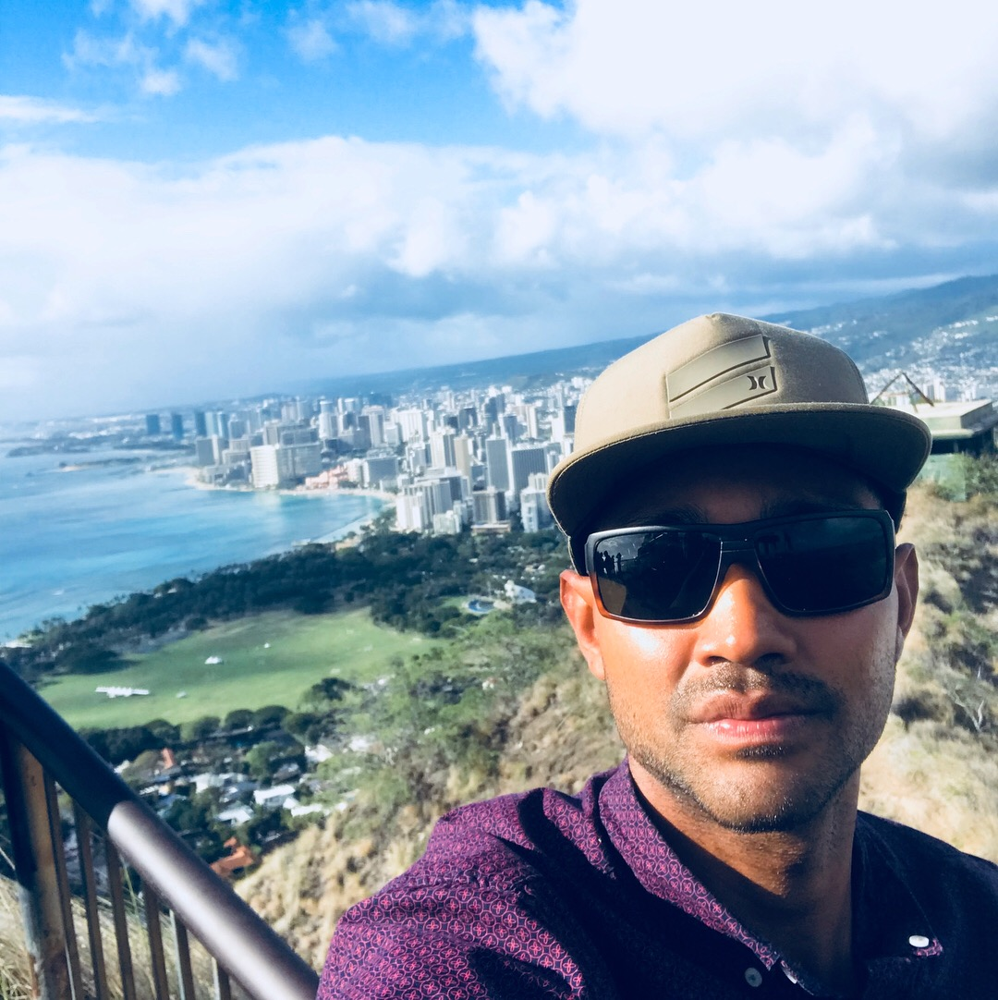

About Me
Currently pursuing a career in web development, to achieve my goal I have taken an extensive course where I have learned to operate with the latest technologies to create, manage, and deploy modern websites and web applications. I have gained enough knowledge to operate with HTML, CSS, javascript, jquery, node.js, MySQL, MongoDB, and I have developed a deep understanding of back-end programming, during my studies I improved my abilities to think logically in a form that allows me to create a program that can display back an interface, fully dynamic with complete back-end properties.
During my studies I developed several web applications, and games as a practice way to implement the new knowledge obtained, I also participated in group projects where we build different applications such as a financial application, an educational game for children, and a platform to obtain bank loans to buy houses, these projects are in my portfolio.
Houston, TX is where I attended Middle School and High School. in Middle School I took a "web mastering" class, and from that moment I became fascinated with the things I could do on a computer and be able to display it on the world-wide-web.I participated in the making of the school website which helped to realize this was something I truly enjoy.
I am a sports fanatic, basketball and surfing are my main two sports that I practice. Exploring other countries and knowing other cultures is something I enjoy a lot, besides the U.S. and Venezuela, I also lived in England and Australia. I started my professional career by studying sound engineering, continued with business administration, I received a certificate, then I co-founded a company in Panama with my sister, we build and lease retail commercial shops, we build them out of shipping containers. Recently I have decided to pursue one of my passions which is to become a professional full-stack web developer, a career that caught my attention from a young age.